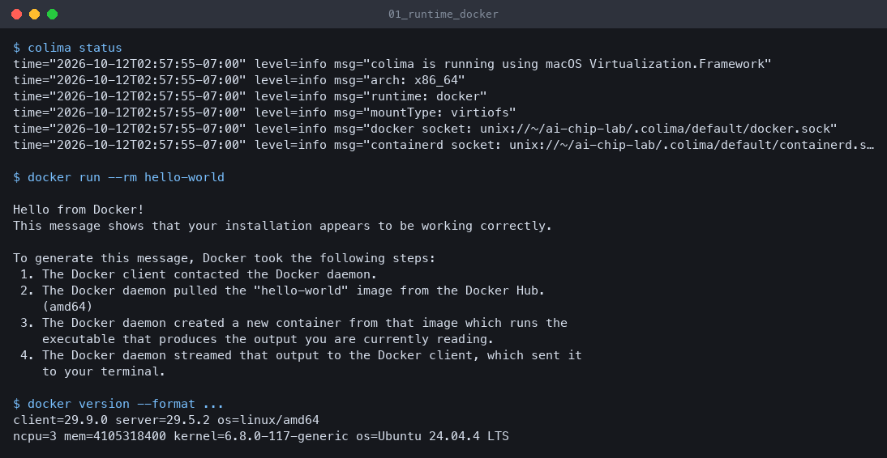

AI chip design lab
An open-source flow from a multiply-accumulate unit to a laid-out chip, built and checked unattended on an old Intel MacBook. Generated 2026-10-12 03:14 PDT from the files on disk; nothing on this page is typed in by hand except the explanations.
1. Summary
PASS × 1 RUNNING × 3 PENDING × 6
| Check | Status | Detail (from marker / summary file) |
|---|---|---|
| Container runtime install | PASS | route A (Colima + Lima, macOS Virtualization.framework) file |
| Lab images (lab-sim, ORFS) | RUNNING | stage in progress file |
| Task 1: INT8 systolic array vs NumPy | RUNNING | stage in progress file |
| Task 1: formal MAC proof (SBY) | PENDING | waits for Task 1 summary |
| Task 1: RTL = netlist equivalence (EQY) | PENDING | waits for Task 1 summary |
| Task 2: OpenROAD reference flow vs shipped thresholds | RUNNING | stage in progress: 2026-10-12 02:59:49 started file |
| Task 3: SCALE-Sim vs analytical model | PENDING | no marker and no results/t3_summary.json yet file |
| Sweep A: architecture (SCALE-Sim) | PENDING | no points yet |
| Sweep B: physical (ORFS) | PENDING | no points yet |
| Repeatability rerun (repro) | PENDING | no marker and no results/repro_report.json yet file |
PASS needs the stage's .done marker and "pass": true in its summary JSON; a missing piece is shown as PENDING, RUNNING, BLOCKED or UNKNOWN, never assumed.
Proof that it builds and runs
Real terminal output saved by the stage that produced it, rendered as an image (not an OS screenshot).


2. What was created
Important files, one line each. Struck-through names do not exist yet.
env.sh | Puts the lab-local tools (colima, docker) on PATH and redirects all VM/Docker state into this directory. |
env.json | Measured machine facts (CPU, RAM, macOS, free disk) captured at preflight. |
budget.json | The time budget and its milestones; the build elapsed time is computed from it. |
versions.lock | Every pinned version, git SHA, image digest, download URL and SHA256 the lab used. |
coord/images.env | The two container images (lab-sim build, ORFS pinned by digest) that every script sources. |
COORDINATION.md | How the agents divided the work: rules, decisions with evidence, requests between agents. |
docker/lab-sim/Dockerfile | Recipe for the simulation image (OSS CAD Suite, Verible, Python venv). |
docker/requirements.lock | Hash-locked Python dependencies installed in the lab-sim image. |
rtl/mac_int8.sv | The multiply-accumulate unit: signed INT8 x INT8 into an INT32 accumulator. |
rtl/systolic_os.sv | R x C output-stationary systolic array built from MAC processing elements. |
tb/test_systolic.py | cocotb testbench: random + directed cases checked against NumPy, with functional coverage. |
formal/ | SymbiYosys property proofs for the MAC (Task 1). |
eqy/ | Equivalence check: RTL versus the Yosys gate-level netlist (Task 1). |
orfs/designs/ | Design configs for the OpenROAD flow (gcd reference and the systolic_os stretch design). |
orfs/render.py | KLayout batch script that turns a GDS layout into a PNG. |
model/ | analytic.py: the closed-form cycle/roofline model that SCALE-Sim is checked against (Task 3). |
arch/ | SCALE-Sim configs and topologies used in Task 3 and sweep A. |
sweeps/ | Sweep drivers: architecture (SCALE-Sim) and physical (ORFS clock x utilization). |
scripts/ | Entry points: with_lock.sh (one heavy job at a time), t1/t2/t3 runners, repro.sh, demo_build.py. |
results/t1_summary.json | Task 1 verdict and measured values. |
results/t2_summary.json | Task 2 verdict and PPA metrics. |
results/t3_summary.json | Task 3 verdict and fit residuals. |
results/repro_report.json | Per-check identical/different verdicts from the clean rerun. |
results/sweeps/ | One JSON line per sweep point, keyed by its parameters. |
results/evidence/ | Scrubbed real terminal output of each stage's key command; rendered to PNG for the README. |
results/.stages/ | Stage markers (.done/.failed/.blocked/.running) that this page reads for its status. |
demo/index.html | This page, generated by scripts/demo_build.py from whatever exists on disk. |
demo/run_demo.sh | The 5-minute re-run: Task 1 (200 cases, both simulators), formal proof, one SCALE-Sim run, ORFS check. |
demo/assets/ | Waveform, layout, plots and evidence PNGs referenced by this page. |
Makefile | make preflight runtime images t1 t2 t3 sweeps repro demo all. |
3. Concepts, from basics
In the order a multiply travels from an idea to a chip. Each box links to the file in this lab that demonstrates it.
1. MAC: multiply-accumulate
The atom of neural-network arithmetic: acc = acc + a*b. A matrix product is nothing but many of these. Here a and b are signed 8-bit integers and the accumulator is 32-bit, so a long sum cannot overflow (127*127*K stays far below 231 for any realistic K).
See: rtl/mac_int8.sv, formal/
2. PE: processing element
A MAC plus the registers that hold its accumulator and pass operands on. In an output-stationary design each PE owns exactly one element of the output matrix and keeps adding into it until the dot product is complete.
See: rtl/mac_int8.sv
3. Systolic array
A grid of PEs where data flows rhythmically from neighbour to neighbour, like blood through the heart (systole). Rows of A enter from the left, columns of B from the top, each skewed by one cycle per row/column so that matching operands meet in the right PE at the right time. No PE needs wide global wiring, which is why TPU-style chips are built this way.
4. Dataflow: ws / os / is
Which value stays put in the PE: weights (ws), outputs (os) or inputs (is). The choice changes how often each operand must be re-read from memory, so it changes cycles and bandwidth for the same arithmetic. SCALE-Sim models all three; the sweep compares them.
5. Memory hierarchy and roofline
Arithmetic is cheap, moving data is not. The roofline model plots achievable performance against arithmetic intensity (operations per byte moved): below the knee a layer is bandwidth-bound, above it compute-bound. Task 3 checks that SCALE-Sim's stalls agree with this classification layer by layer.
See: model/, results/t3_summary.json
6. RTL: register-transfer level
Hardware described as registers and the combinational logic between them, in SystemVerilog. It is the level at which designers write chips and the input to synthesis.
See: rtl/systolic_os.sv
7. Verification
Showing the RTL is right. Three independent oracles are used: simulation against NumPy integer matmul (random and directed tests, on two different simulators that must produce byte-identical output), a formal proof that the MAC obeys its equation for all inputs, and an equivalence check that the synthesized netlist behaves like the RTL.
See: tb/test_systolic.py, formal/, eqy/, results/t1_summary.json
8. Logic synthesis
Turning RTL into a netlist of standard cells (NAND, flip-flop, ...) from a technology library; Yosys with ABC does this here. The cell count and area it reports are the first real hardware cost numbers.
See: orfs/designs/, results/t2_summary.json
9. Place and route
Floorplan (chip outline, I/O pins, power grid), placement (where each cell sits), clock-tree synthesis (distribute the clock with balanced delay), then routing (metal wires on many layers). OpenROAD runs all of this; utilization is the fraction of the core area occupied by cells.
See: orfs/designs/, results/t2_summary.json
10. Static timing analysis
Checking every register-to-register path against the clock period without simulating. Slack is the margin; WNS is the worst negative slack and TNS the total of all negative slacks. WNS ≥ 0 means the design meets timing. OpenSTA, embedded in OpenROAD, does it. The physical sweep finds the fastest clock that still closes.
See: results/t2_summary.json, results/sweeps/phys.jsonl
11. PDK
The process design kit: the foundry-supplied cell libraries, timing models, layer stack and design rules for a manufacturing process. nangate45 is an open teaching PDK; sky130 is a real open 130 nm process.
See: orfs/designs/
12. GDSII
The final geometry file handed to a foundry (the mask layers). The layout images in the results section are KLayout renders of the GDS that the flow produced; GDS files themselves are large and are not committed.
See: orfs/render.py
4. Tool map
| Open-source tool (used here) | Chip-design stage | Commercial equivalent |
|---|---|---|
| Verilator, Icarus Verilog | RTL simulation | VCS, Xcelium, Questa |
| cocotb (+ cocotb-coverage) | Testbench / functional coverage | UVM |
| SymbiYosys, EQY | Formal property proof, equivalence checking | JasperGold, Formality, Conformal |
| Yosys (+ ABC) | Logic synthesis | Design Compiler, Genus |
| OpenROAD | Floorplan, place, CTS, route | Innovus, ICC2 |
| OpenSTA | Static timing analysis | PrimeTime, Tempus |
| KLayout, Magic | Layout viewing, DRC/LVS | Calibre |
| SCALE-Sim, Timeloop | Architecture performance model | In-house architecture models |
| Colima + Docker | Reproducible tool environment | Site-wide tool installs and license servers |
5. How each thing was tested
Task 1 - INT8 systolic array RUNNING
| oracle (what is right) | Integer matrix multiplication done by NumPy (A.astype(int32) @ B.astype(int32)), which is exact. Second oracles: a second simulator, a formal proof and a netlist equivalence proof. |
|---|---|
| command | make t1 (runs scripts/t1_run.sh inside the lab-sim image). |
| inputs and seeds | Random INT8 matrices from seed 1234, tiled onto the 4x4 array, plus directed cases (all -128, all 127, zeros, identity, clear mid-stream, K=1, shapes not a multiple of the array size). Run on Verilator and Icarus. |
| pass criteria | 0 mismatches on both simulators; sha256 of the two result CSVs equal; formal proof passes; EQY passes. |
| result file | results/t1_summary.json |
Actual result: stage in progress
Task 2 - OpenROAD reference flow RUNNING
| oracle (what is right) | Published thresholds shipped with ORFS (rules-base.json), checked by ORFS's own checkMetadata.py. |
|---|---|
| command | make t2 (runs scripts/t2_run.sh and scripts/t2_check.sh with the pinned ORFS image). |
| inputs and seeds | nangate45 gcd (and sky130hd gcd if time allowed), each twice from a clean directory with the same image digest and core count. |
| pass criteria | All metrics within thresholds; final DRC count 0; GDS exists; the two runs give identical metrics. |
| result file | results/t2_summary.json |
Actual result: stage in progress: 2026-10-12 02:59:49 started
Task 3 - SCALE-Sim vs analytical model PENDING
| oracle (what is right) | A closed-form model (folds x (K + fill/drain)) and the roofline model, both in model/analytic.py. |
|---|---|
| command | make t3 (runs scripts/t3_run.sh in the lab-sim image). |
| inputs and seeds | Bundled TPU-like config and bundled topology for ws, os and is; synthetic GEMMs for the fit; array and K doubled to test that residuals stay stable. |
| pass criteria | Two reruns byte-identical; analytic model within the fitted constant with stable residuals; roofline classification agrees with stalls. |
| result file | results/t3_summary.json |
Actual result: no marker and no results/t3_summary.json yet
Sweeps
Sweep A varies array size, dataflow, topology and SRAM size in SCALE-Sim; sweep B varies clock period and core utilization through OpenROAD. Each point is one JSON line keyed by its parameters (resumable, per-point timeout).
results/sweeps/arch.jsonl: PENDING no points yet.
results/sweeps/phys.jsonl: PENDING no points yet.
6. Results
Task 1: waveform and verification
PENDING no images on disk yet.
Task 2: layouts
PENDING no images on disk yet.
Task 3: cycles versus analytic model, roofline
PENDING no images on disk yet.
Sweep A: architecture heatmaps
PENDING no images on disk yet.
Sweep B: heatmaps and timing-closure frontier
PENDING no images on disk yet.
PPA (power, performance, area) table
PENDING results/t2_summary.json not written yet.
7. Repeatability
PENDING no marker and no results/repro_report.json yet
The clean-directory rerun of Tasks 1-3 with the pinned images runs late in the budget; until then there is no repro report and none is invented.
Images and pinned versions
# ORFS: tag 26Q3-600-g3a964e13f, pinned by registry index digest (linux/amd64 manifest sha256:7fbb16f7aaf3caa170ea308c1bd833defc7fdf1f5316303dce6a0e6eeb6deee9) ORFS_IMAGE=openroad/orfs@sha256:573c1716efa0e286c4f641c26d343e20929d58d27fffbb22be2d0b93f09764f6 # lab-sim: local build, image id sha256:b097133a70f052ddb5336f871fcb73116e9cdc17ee2dec5ab27b4a93b2d377ca (also tagged lab-sim:latest) LAB_SIM_IMAGE=lab-sim:20261012
versions.lock (all pins, URLs, SHA256)
# versions.lock — append-by-section. Every value below was read from the tool, registry or release API in this lab.
runtime: # owner: infra, stage 01_runtime, recorded 2026-10-12 02:55:32 PDT
route: "A (Colima + Lima, macOS Virtualization.framework)"
why: "macOS 13.7.8 >= 13 so vz works without QEMU; no sudo and no Homebrew needed; Route B (Docker Desktop) needs sudo which is unavailable. Route A worked on the first attempt."
artifacts: # name, version, url, sha256, verified_against
- {name: lima, version: "2.2.1", url: "https://github.com/lima-vm/lima/releases/download/v2.2.1/lima-2.2.1-Darwin-x86_64.tar.gz", sha256: 6b776e4bc41f358e6ee01fefcc78e2eb26f11635a0fcff632234af77a566c6c4, verified_against: "https://github.com/lima-vm/lima/releases/download/v2.2.1/SHA256SUMS"}
- {name: colima, version: "0.10.3", url: "https://github.com/abiosoft/colima/releases/download/v0.10.3/colima-Darwin-x86_64", sha256: 3082737fe8a98afda11cba7d9a20b6e56fe80c6153464beda04bec630758770b, verified_against: "https://github.com/abiosoft/colima/releases/download/v0.10.3/colima-Darwin-x86_64.sha256sum"}
- {name: docker-cli, version: "29.9.0", url: "https://download.docker.com/mac/static/stable/x86_64/docker-29.9.0.tgz", sha256: 65a7885c563226dba96c31d1a7aa78ee098199dc1c1f111582673544c91ad8de, verified_against: "none-published(computed-locally)"}
- {name: docker-buildx, version: "0.38.0", url: "https://github.com/docker/buildx/releases/download/v0.38.0/buildx-v0.38.0.darwin-amd64", sha256: b123dc6fb51f88e47d37223938e2acd66edec73105459f65f19f15cc912ee559, verified_against: "github-api-asset-digest(https://api.github.com/repos/docker/buildx/releases/tags/v0.38.0)+codesign(Docker Inc 9BNSXJN65R); not listed in https://github.com/docker/buildx/releases/download/v0.38.0/checksums.txt"}
tool_versions:
limactl: "limactl version 2.2.1"
colima: "colima version v0.10.3 git commit: 00f6c297e92a82c04a4ab507db0a61435650d7e8 runtime: docker arch: x86_64 client: v29.9.0 server: v29.5.2"
docker_client: "29.9.0"
docker_server: "29.5.2"
buildx: "github.com/docker/buildx v0.38.0 0dbe87f36ed472fe36b6796c3f70b4210a731fc5"
vm:
type: vz
arch: x86_64
cpus: 3
memory_bytes: 4105318400
disk_gib: 60 # sparse data disk (/var/lib/docker); root disk 20 GiB (colima default)
guest_os: "Ubuntu 24.04.4 LTS"
kernel: "6.8.0-117-generic"
storage_driver: "overlayfs"
mount: "~/ai-chip-lab -> same path in VM, writable, virtiofs (only the lab is mounted, not $HOME)"
docker_host: "unix://~/ai-chip-lab/.colima/default/docker.sock"
verify:
hello_world_digest: "hello-world@sha256:5e23090353324d887c48ad5e5c56d294eab81588df9605b07d1afe895f9cc8f8"
log: logs/01_runtime/start.log
8. Problems and honest caveats
- RUNNING Lab images (lab-sim, ORFS) was not finished when this page was built: stage in progress
- RUNNING Task 1: INT8 systolic array vs NumPy was not finished when this page was built: stage in progress
- PENDING Task 1: formal MAC proof (SBY) was not finished when this page was built: waits for Task 1 summary
- PENDING Task 1: RTL = netlist equivalence (EQY) was not finished when this page was built: waits for Task 1 summary
- RUNNING Task 2: OpenROAD reference flow vs shipped thresholds was not finished when this page was built: stage in progress: 2026-10-12 02:59:49 started
- PENDING Task 3: SCALE-Sim vs analytical model was not finished when this page was built: no marker and no results/t3_summary.json yet
- PENDING Sweep A: architecture (SCALE-Sim) was not finished when this page was built: no points yet
- PENDING Sweep B: physical (ORFS) was not finished when this page was built: no points yet
- PENDING Repeatability rerun (repro) was not finished when this page was built: no marker and no results/repro_report.json yet
- The owner capped the run at 6 h (the original task text says 14 h), so all stage budgets were scaled down; anything cut for time is listed above.
Fix commands for blocked stages are inside the marker text shown above.
9. Where to go next
- bfloat16 / FP8 processing elements, checked against
ml_dtypes
Modern training and inference chips left INT8-only long ago; a floating-point MAC has a mantissa multiplier and rounding that are easy to get subtly wrong, and ml_dtypes gives a bit-exact oracle. - Double-buffered SRAM modelled with CACTI
The array is only half the chip; the on-chip buffer decides whether it stays fed, and CACTI turns capacity into area, energy and access time to plug into the roofline. - systolic_os through sky130 and PPA across PDKs
Comparing the same design on nangate45 and sky130 shows how much of the result is the process rather than the design. - VCD/SAIF switching activity from cocotb for real power
Power numbers from default activity are guesses; feeding the actual toggle rates of a real matmul to OpenROAD makes them meaningful. - Gemmini/Chipyard, TVM/VTA or MLIR/CIRCT
Moves from a hand-written array to a full generated accelerator with a compiler stack, which is how real systems are explored. - DREAMPlace
GPU-style analytical placement; a well-defined component to swap into the flow and compare. - LLM-written RTL scored against VerilogEval
Uses the same lab as a judge: generated RTL passes only if the simulators and formal tools agree it is right.
Re-generate this page at any time: python3 scripts/demo_build.py. 5-minute re-run: bash demo/run_demo.sh.